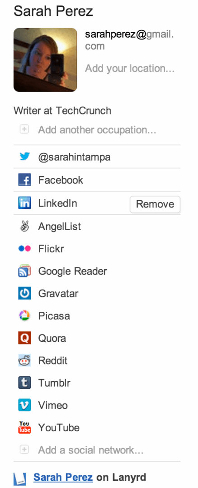
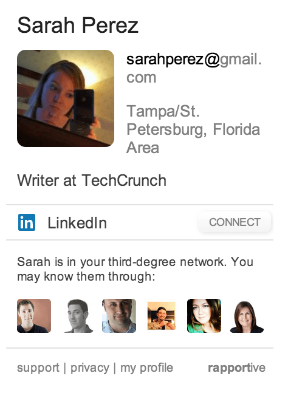

Alan Hamlett
LinkedIn Neutered Rapportive Today
Wed Jul 30, 2014 Alan Hamlett
Rapportive, the wildly useful Gmail widget that displayed social profiles from Facebook, Twitter, and more about your contacts, has been made useless today by LinkedIn. After acquiring the startup in 2012, the Rapportive widget didn't change much for two years. Here is what the widget looked like before today, showing a list of social profiles for the current contact:

However, after today LinkedIn has removed the useful list of social profiles leaving only the person's LinkedIn profile:

Additionally, when looking up an email address not connected to a LinkedIn profile Rapportive would show the information it had for that person. However, when looking up the same email now Rapportive shows a generic photo and a completely blank profile.
LinkedIn has succeeded in taking a useful product with over 326k users and making it completely and utterly useless.
For some alternatives to Rapportive try Rapporto, Ark Mail, VibeApp, 360Social, Connect6, FullContact, or Sansan.